Viaja a tu manera
Recorre la galaxia pilotando la nave o continúa la exploración a pie.
UNA AVENTURA ENTRE DOS UNIVERSOS
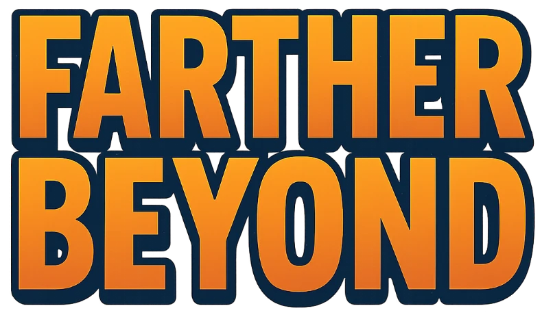
¿Qué tan lejos
puedes llegar?
Un portal conecta el espacio con el mundo de Dungeon Critters. Acompaña al Astronauta, enfrenta a las criaturas que cruzaron y encuentra la forma de cerrar la brecha.
Explora la galaxia · Cierra el portal
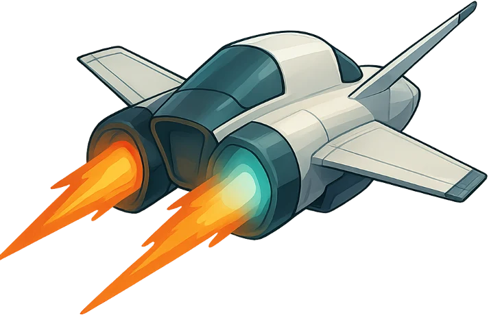
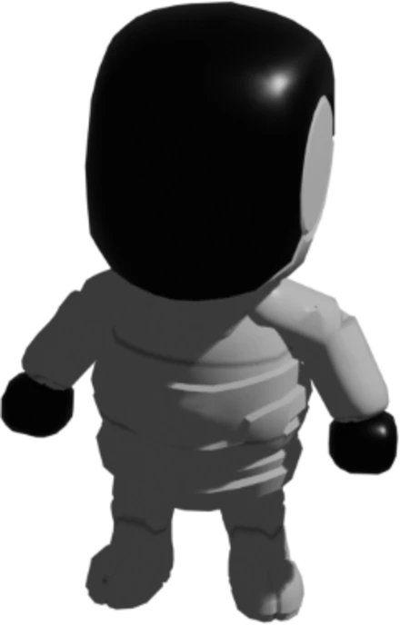
SEÑAL DETECTADA: PORTAL + + + FB / SECTOR 0101 / LA MISIÓN
Algo abrió un portal entre el espacio y el universo de Dungeon Critters. Los Critters ya están aquí; el Astronauta tendrá que llegar hasta la brecha y cerrarla.
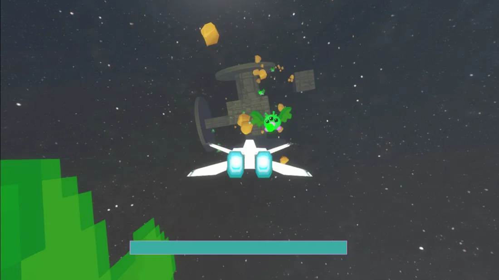
Recorre la galaxia pilotando la nave o continúa la exploración a pie.
Explora cada nivel y evade o derrota a los Critters que encuentres.
Avanza por la aventura para alcanzar la brecha y poner fin a la invasión.
02 / TU COMPAÑERO DE VIAJE
Un explorador listo para pilotar su nave, recorrer los niveles y usar lo que encuentre en el camino. Su objetivo es llegar al portal y cerrarlo antes de que los Critters invadan por completo este universo.
Mira la misión en acción03 / ENCUENTROS EN LA GALAXIA
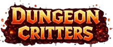
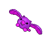
El murciélago morado que llegó desde Dungeon Critters.
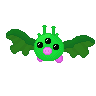
Un Batling transformado tras exponerse al espacio.
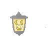
La evolución eléctrica de Cindlet. Una pequeña luz amiga que ayuda al Astronauta.
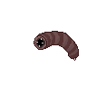
Se arrastra por el suelo y sigue de cerca al jugador.
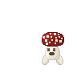
El hongo rojo de Dungeon Critters que se cruza en el camino.
HERRAMIENTAS PARA EL CAMINO
Aumenta la vida máxima.
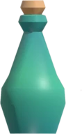
Recupera vida tras recibir daño.
04 / IMÁGENES DEL JUEGO
Un vistazo a los viajes por el espacio, los niveles y los encuentros que esperan al Astronauta.
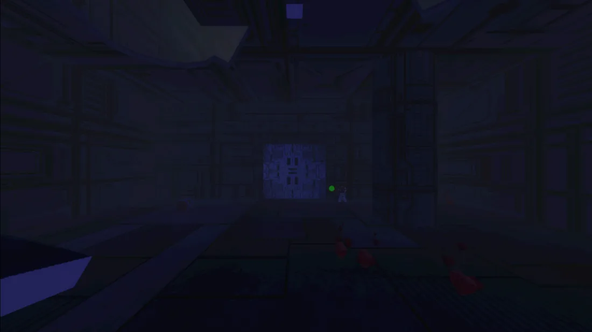
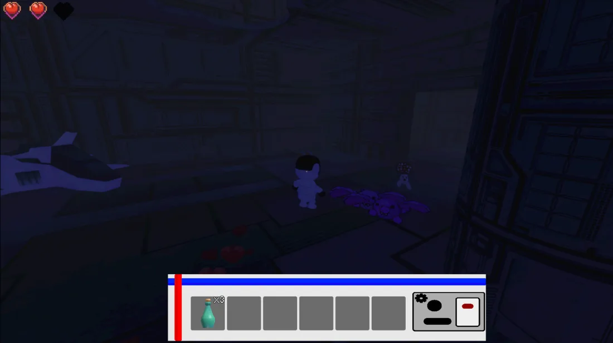

EL EQUIPO DETRÁS DE LA MISIÓN
Somos el equipo creador de Farther Beyond. Construimos esta aventura en Godot y conectamos la galaxia con el mundo de Dungeon Critters.
Conoce el proyecto en GitHub05 / PREPÁRATE PARA LA MISIÓN
Descarga Farther Beyond para Android y acompaña al Astronauta en su viaje.
La descarga estará disponible cuando se verifique el archivo.
Consultando GitHub Releases…
Ver todos los releasesDescarga únicamente desde los releases de este proyecto. Puedes desactivar el permiso de instalación después. La compatibilidad depende de tu dispositivo y de la versión del juego.